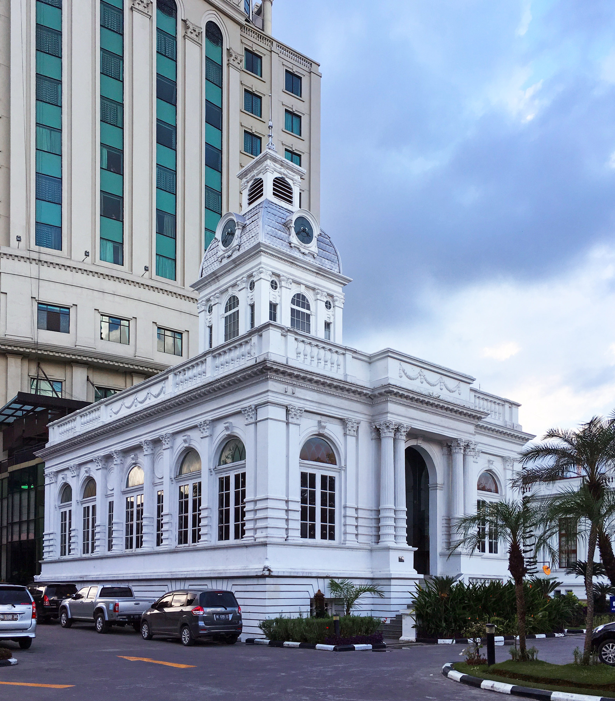
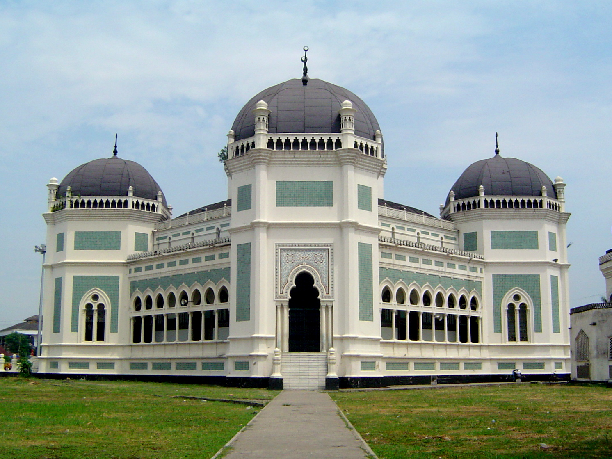
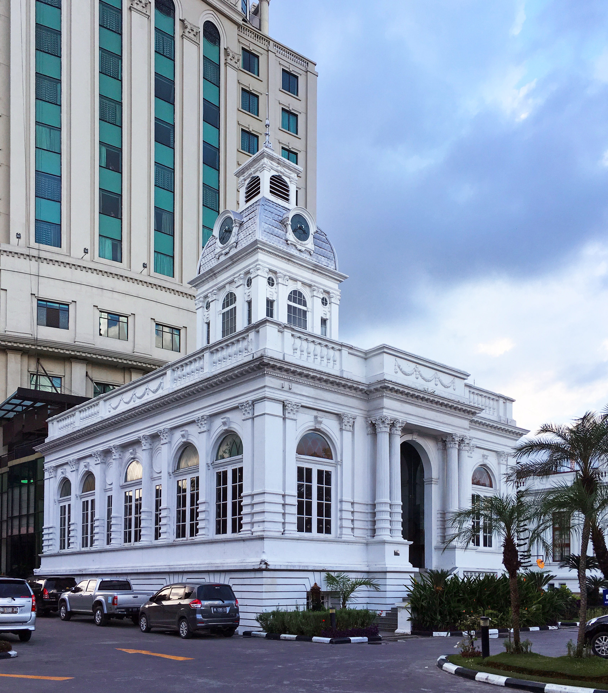
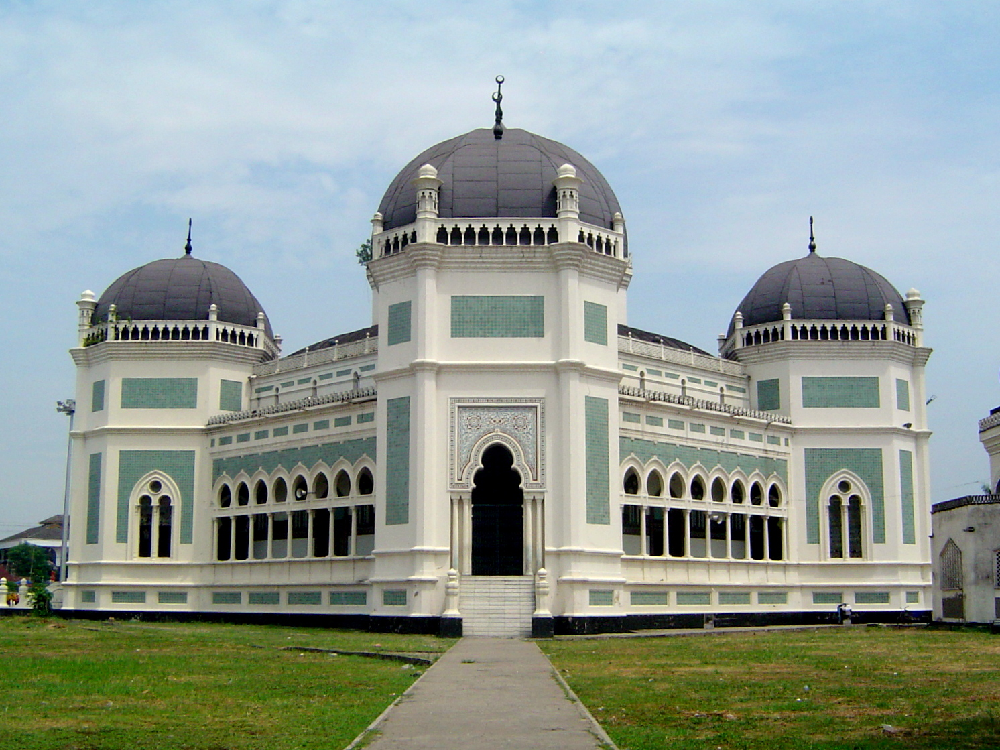

Tourist Places
 



There are many old buildings in Medan that still retain their Dutch architecture. These include the old City Hall, the Medan Post Office, Inna Dharma Deli Hotel, Titi Gantung (a bridge over the railway), The London Sumatra building, the Tjong A Fie Mansion, AVROS, Warenhuis, and The Tirtanadi Water Tower, mostly located around the old town Kesawan. There are several historic places such as Maimoon Palace built in years 1887–1891, where the Sultan of Deli still lives (the Sultan no longer holds any official power), The Great Mosque of Medan built in 1906 in the Moroccan style by the Dutch architect A.J. Dingemans. both location of Maimoon Palace and The Great Mosque are close. The Mosque located on Jalan Sisingamangaraja and The Palace located on Jalan Brigjen Katamso.